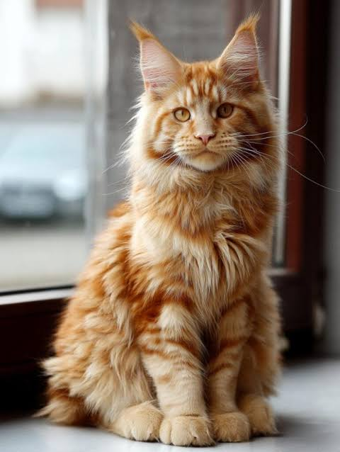
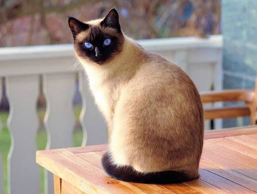
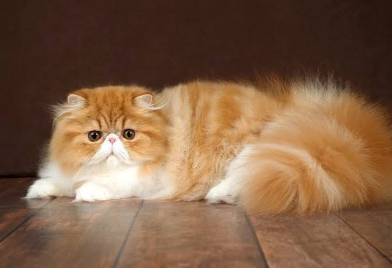

Popular Cat Breeds
Maine Coon

Maine Coons are known for their large size, long fur and friendly personalities.
Siamese

Siamese cats are known for their blue eyes, distinctive coloring and vocal personalities.
Persian

Persian cats have long fur and a round face. They need regular grooming.